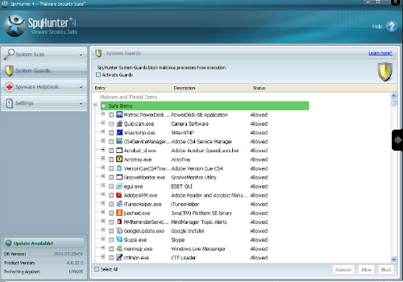

Rabbit Minaccia è minaccia molto pericolosa, che è sviluppato da vari hacker remoti, al fine di danneggiare completamente i computer. Tiene traccia di ogni tipo di utente battiture nel suo computer, intera applicazione utilizzata dall'utente del PC, tutta la cronologia di navigazione, ecc Si può rallentare le prestazioni del sistema e porta a brusco arresto del computer. Rabbit È generalmente presente in posizione nascosta nel disco rigido del sistema. Esso può bloccare il computer e richiede denaro per recuperare il problema. Si cambia la home page predefinita e reindirizza ricerche totali per i siti Web dannosi. Ha capacità di entra automaticamente nel sistema dell'utente senza il consenso dell'utente.
Avviare il PC in modalità provvisoria premendo F8 chiave ei file temporanei rimuovere completamente che possono essere selezionate in questa data posizione "C: \ Documents and Settings \ nomeutente \ Impostazioni locali \ Temporary".
Selezionare e Terminare tutti i processi relativi a Rabbit minaccia premendo contemporaneamente CTRL + ALT + Delete.

Cerca tutti i file e le cartelle in tutto il disco rigido utilizzando un'opzione di ricerca nel menu start e cancellare tutti loro in modo permanente.
Vai a Esegui nel menu di avvio e scrivere regedit.exe per individuare le voci di registro di questa brutta minaccia e infine lo elimina completamente facendo clic destro su di esso.
Automatica Rabbit Rimozione Strumento è la soluzione più importante ed efficiente per Rabbit minaccia perché è stato progettato dai professionisti informatici che avevano lavorato molto per sviluppare una tecnica impressionante efficacia della rimozione di questa infezione critico dal PC . Il software è uno strumento completamente affidabile ed efficace, perché, al fine di utilizzare l'utilità di conoscenze tecniche è necessario anche un uso principiante può anche avvalersi del software e fare la loro infezione sistema libero. Funziona ha solo pochi passi per completare il compito, quindi, è un risparmio di tempo un'opzione troppo. Dopo aver utilizzato il software è possibile eseguire la scansione, rilevare ed eliminare minacce Rabbit rapidamente. Quindi se siete anche aspettando uno strumento robusto per eliminare lo spyware allora il vostro tempo di attesa è finita e ora si può comodamente utilizzare Automatica Rabbit Rimozione Strumento per completare il lavoro.

